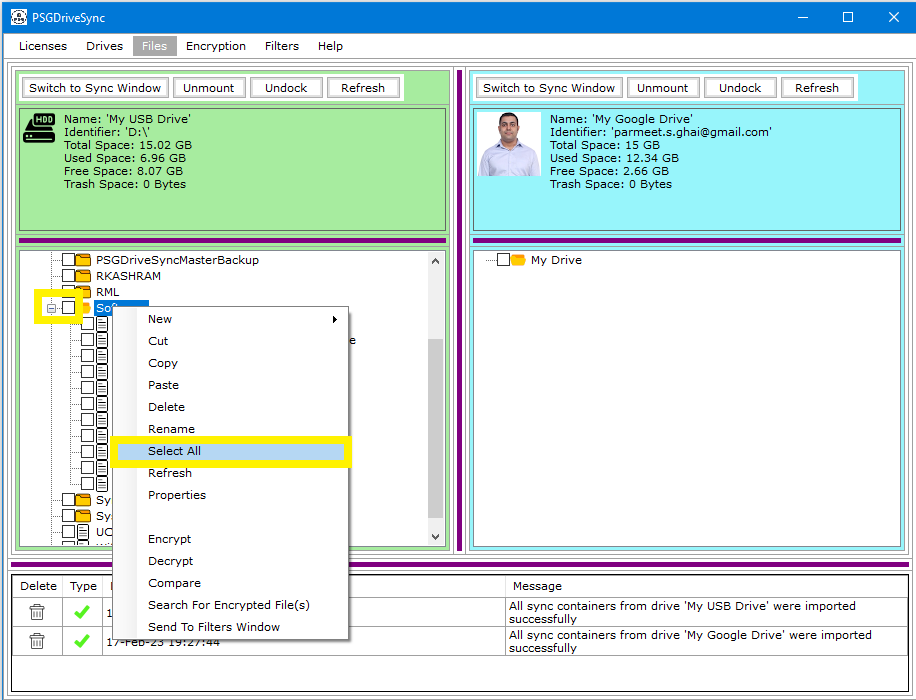
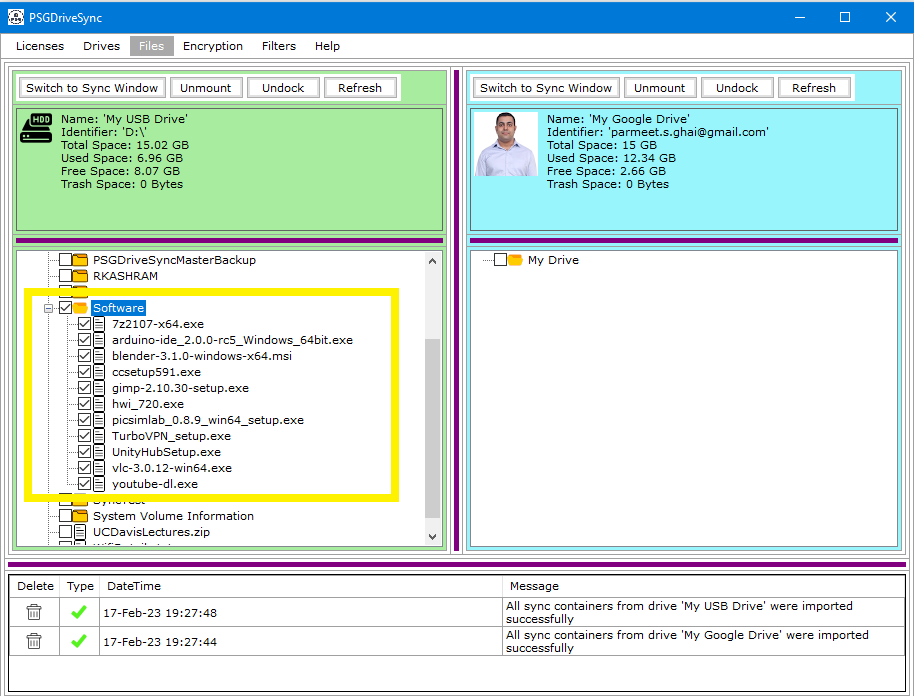

Select All Files and Folders options allows you to check mark or select all the files and folders which are contained inside a folder. This option is only available in "Files" window browse mode. Following are the steps needed to be performed in order to Select All Files and Folders within a folder.
|
1 |
Right click on the folder of your choosing and then click on "Select All" in the right click menu or you can simply Check the box next to the folder of your choosing. Either ways all files and folders contained within that folder should get selected or checked. |
 |
|
2 |
All selected / checked files and folders should show up under the folder that you right clicked on in step 1. |
 |